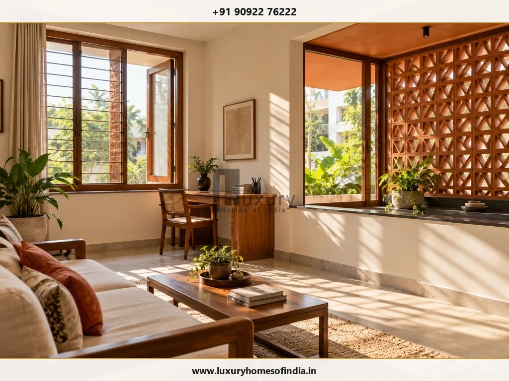
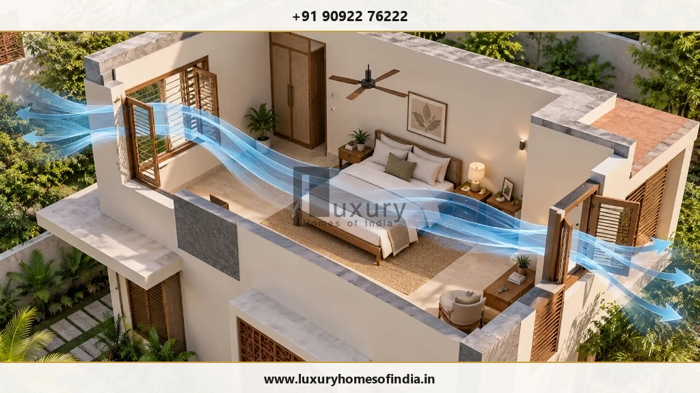
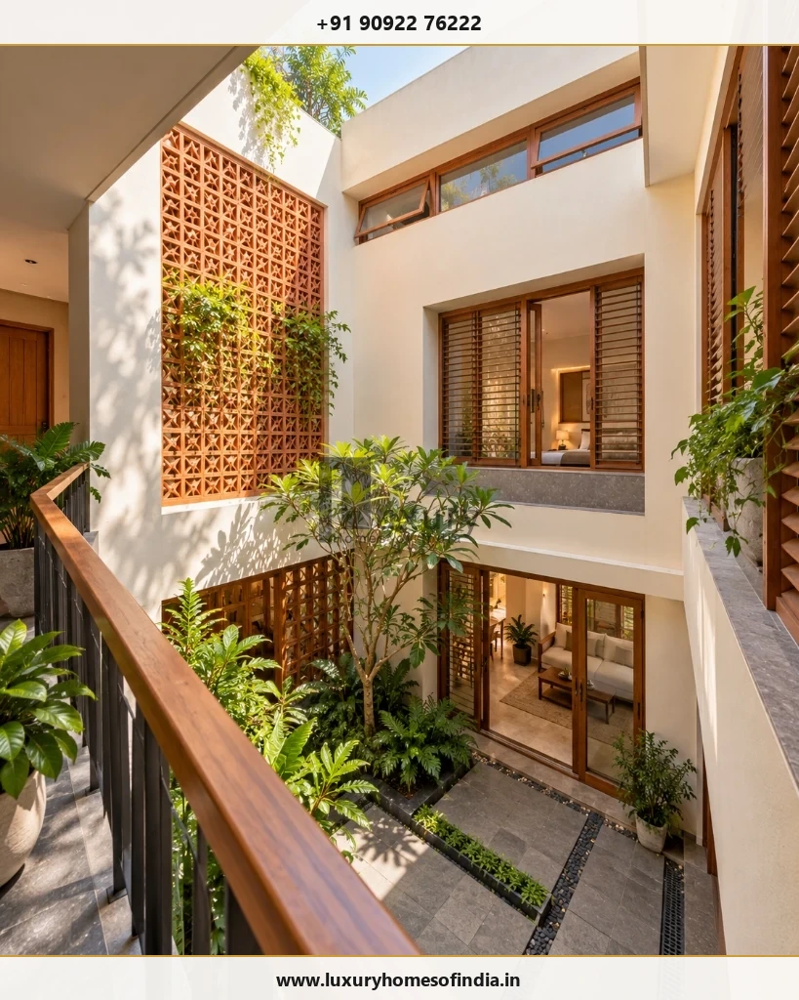
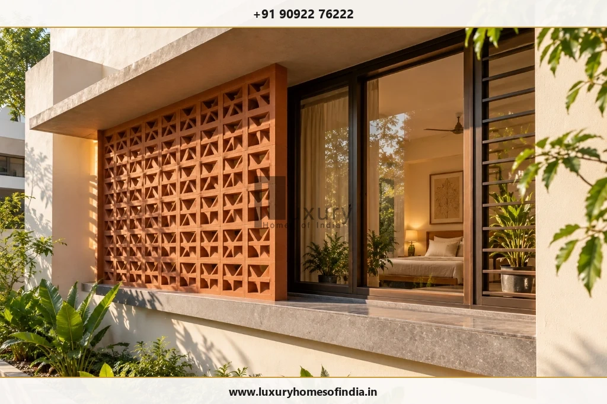

Quick Answer: How Do You Improve Natural Light and Ventilation?
To improve natural light and ventilation in a Chennai house, plan openings according to site orientation, room depth, prevailing wind directions, and surrounding plot obstructions. Where practical, position openable windows on opposing or adjacent walls to establish clear cross-ventilation paths, design external shading (overhangs, deep verandas, and terracotta jaali screens) to block harsh solar heat and glare, and incorporate internal courtyards or skylights for deep floor plans.
In Chennai's warm-humid coastal climate, the design objective is balanced performance: generous glare-free daylight, reliable sea-breeze airflow, visual privacy, and minimal thermal heat gain. Merely sizing up window glass will overheat the home; openings must be engineered around actual sun angles, building setbacks, and everyday room usage.

1. Why Daylight and Ventilation Belong in the Initial House Plan
A well-designed home should feel bright, breezy, and connected to the outdoors without turning into an uncomfortably hot greenhouse that demands non-stop air conditioning. In Chennai, achieving this balance requires far more than cutting large window openings into exterior brickwork. The orientation of the plot, neighbouring multistory structures, compound wall heights, internal corridor layouts, prevailing sea-breeze directions, and solar angles all dictate how a house breathes and catches daylight.
Natural daylight transforms living spaces, enhances circadian rhythms, and drastically cuts daytime artificial lighting requirements. Concurrently, natural ventilation flushes accumulated indoor heat, dilutes volatile organic compounds (VOCs), and removes moisture and cooking odours. However, both environmental drivers depend on distinct physical principles:
- Daylight Performance: Dictated by visible light transmittance (VLT) of glazing, window head height, room depth, wall reflectances, and external obstructions such as neighbouring parapets or trees.
- Air Movement Dynamics: Driven by wind-induced pressure differences across building envelopes, convective temperature gradients (stack effect), clear internal free-flow paths, and the net openable free area of fenestration.
- Thermal Comfort: Determined by solar heat gain coefficient (SHGC), envelope insulation (roof and external wall U-values), relative humidity, ceiling fan air velocity, and supplemental mechanical cooling.
Statutory Standards: NBC 2016 & BEE Eco Niwas Samhita
The Bureau of Indian Standards (BIS) specifies mandatory lighting and natural airflow requirements in the National Building Code of India 2016 (Part 8, Section 1: Lighting and Natural Ventilation). Complementing this, the Bureau of Energy Efficiency (BEE) outlines strict envelope thermal performance, daylighting potential (Daylight Factor), and Natural Ventilation Potential in the Eco Niwas Samhita (Part 1: Building Envelope). Incorporating these standards during the initial concept stage ensures regulatory compliance and long-term indoor comfort.
A fixed picture window delivers abundant daylight while offering zero ventilation. Conversely, an openable casement window provides ventilation potential but will fail to move air if there is no exit opening or if the exterior wind is blocked by an adjacent boundary wall. Separating daylighting from ventilation functions during early concept planning is the foundation of high-performance architecture.
2. Choose Window Placement Based on the Site
Window layout must never be treated as an arbitrary elevation exercise. In Chennai's tropical latitude (~13.08° N), window planning begins with site orientation, sun path geometry, neighbouring structures, road noise exposure, and privacy boundaries.
East-facing windows receive pleasant morning sunlight with lower ambient temperatures, but can become uncomfortably bright if unshaded after 9:00 AM. West-facing windows bear the brunt of intense afternoon solar radiation when ambient outdoor temperatures are at their daily peak; unshaded west glass acts as a thermal trap that radiates heat deep into bedrooms and family lounges well into the night. North-facing openings provide the softest, most consistent, and virtually glare-free diffused daylight throughout the year, making north elevations ideal for home offices, studies, and double-height living areas. South-facing openings capture Chennai's prevailing southerly and south-easterly summer sea breezes, but require horizontal overhangs (chajjas) to shade the high midday sun.

Before locking window positions and structural lintel heights, review these site-specific questions with your architect:
- Daylight Destination: Where is functional task lighting required most during working and daytime living hours?
- Glare Vulnerability: Will unfiltered sunbeams hit television screens, laptop workstations, or polished marble surfaces?
- External Shading Protection: Can an architectural chajja, cantilevered balcony slab, vertical fin, or decorative jaali protect the glass?
- Airflow Exit Path: Does the window open into a space that connects directly to an exhaust or leeward opening?
- Compound Wall Obstructions: Will a 6-foot compound wall or a neighbouring G+3 apartment block choke daylight and wind velocity at ground level?
- Ergonomics & Security: Can household members easily operate, clean, latch, and secure the windows without stepping onto hazardous furniture?
3. Plan Cross-Ventilation Around a Clear Airflow Path
Cross-ventilation is the physical movement of fresh ambient air driven through an interior volume by positive pressure on the windward facade and negative pressure (suction) on the leeward facade. Simply placing two windows in a room does not guarantee air circulation—the openings must be positioned strategically relative to prevailing breezes, and the indoor path must be unobstructed.
In Chennai, prevailing breezes blow predominantly from the South and Southeast during the warmer months (bringing vital evaporative cooling from the Bay of Bengal), shifting toward the Northeast during the winter monsoon months. Positioning primary intake windows on the windward side and relief openings on the opposite or adjacent walls creates an active pressure differential that induces continuous indoor air changes.

Key Rules for Effective Natural Cross-Ventilation
- Staggered Openings: Locate intake and discharge openings on opposite or adjacent walls. Diagonal airflow paths circulate across a greater room volume than straight-line paths.
- Inlet vs. Outlet Sizing: A slightly smaller windward inlet paired with a larger leeward outlet accelerates incoming wind speed due to the Venturi effect, creating a pleasant cooling breeze across occupied seating or sleeping levels.
- Low-Level Intakes & High-Level Exhausts: Positioning relief openings near ceiling level facilitates the natural buoyancy of warm air (stack effect), drawing hot air up and out while sweeping fresh cooler air at bed or sofa height.
- Internal Partition Management: Avoid floor-to-ceiling solid masonry walls in deep family spaces; incorporate louvered doors, clerestory transoms, or open-slat timber screens to allow uninterrupted airflow across rooms.
4. Bring Daylight Deeper into the House
A common flaw in modern Indian residential design is the "bright perimeter, dark core" dilemma. Rooms directly abutting exterior walls receive intense illumination, while central living zones, dining halls, stairwells, and internal corridors remain dim, requiring electric lighting throughout the day.
Useful daylight penetration typically reaches a depth into a room equal to 1.5 to 2.0 times the height of the window head. Sizing openings correctly and raising lintel heights distributes ambient light far deeper into the building footprint:
- Raise Window Lintel Heights: Specifying 8-foot or 9-foot lintels (or full-height floor-to-ceiling glazing with integrated overhangs) allows daylight to bounce off the ceiling and penetrate deep into central rooms.
- Incorporate High-Level Clerestory Windows: Clerestory ribbon windows situated beneath upper slabs capture ambient high-angle skylight while preserving total privacy from neighbouring plots and compound walls.
- Use Reflective Interior Finishes: Off-white, ivory, or warm matte wall paints and light-toned ceilings reflect up to 80% of incoming light. Avoid high-gloss wall finishes that create harsh, fatiguing reflections.
- Glazed Internal Transoms & Partitions: Fluted glass, frosted partitions, and open timber slats between living and dining areas allow secondary light to illuminate interior circulation corridors without sacrificing privacy.
5. Use Courtyards and Lightwells Where They Solve a Real Problem
Internal courtyards (known historically as the mutram in traditional Tamil Nadu Chettinad architecture) are one of the most effective bioclimatic devices for dense urban plots in Chennai. When neighbouring multistory homes or tight mandatory setback rules (e.g. 1.5 m side setbacks under TNCDBR) restrict exterior window placement, an internal open-to-sky courtyard or lightwell introduces abundant natural illumination and vertical ventilation into the very core of the house.
Beyond their visual charm, courtyards function as natural thermal engines. During warm daytime hours, solar radiation warms the air within the courtyard column. As this warm air rises, it creates low pressure at ground level, drawing cooler air through shaded peripheral verandas, dining spaces, and family living rooms.

Engineering Checks for Chennai Courtyards
While architecturally stunning, a courtyard must be engineered thoroughly to prevent thermal discomfort, water damage, and pest intrusion:
- Monsoon Rain Drainage: Chennai experiences torrential Northeast Monsoon downpours (often exceeding 100 mm in a single day). Courtyard floors must feature deep perimeter drainage trenches, dual overflow relief pipes, and high-capacity grating connected directly to rainwater harvesting sumps.
- Waterproofing & Threshold Steps: Maintain a minimum 100 mm to 150 mm drop from adjoining interior finished floor levels (FFL) to the courtyard base, backed by heavy-duty multi-layer elastomeric waterproofing membranes.
- Thermal Shading & Pergolas: An unshaded, fully open courtyard in May can turn into a heat collector. Integrate horizontal timber pergolas, motorised fabric blinds, or terracotta jaali screens to temper peak midday solar intensity.
- Insect Screens: Stainless steel 304-grade architectural mesh or operable glass sliding doors allow homeowners to close off the courtyard during peak mosquito seasons while maintaining daylight views.
6. Are Skylights Suitable for Chennai Homes?
Skylights and glazed roof lanterns can dramatically illuminate dark internal stairwells, double-height foyers, walk-in closets, and central puja rooms. However, specifying overhead glass in Chennai requires extreme climatic caution.
Because Chennai sits near the equator, the sun passes directly overhead during summer months. Horizontal or low-slope roof glass receives 2.5 to 3 times more solar radiation per square meter than vertical facade glass. Installing a standard uninsulated, single-pane glass skylight will create severe greenhouse overheating, rendering the space underneath unusable and driving up air conditioning loads.
Technical Specifications for Successful Roof Glazing
- High-Performance Insulated Glass Units (IGU): Specify double-glazed laminated glass with a low solar heat gain coefficient (SHGC ≤ 0.25 to 0.30) and low-emissivity (low-E) reflective coatings that transmit visible daylight while bouncing thermal infrared waves.
- Exterior Solar Shading: Install fixed architectural aluminum louvers or automated exterior drop shades positioned above the glass. Shading the exterior prevents heat from penetrating the envelope.
- Raised Upstand Curb: Never install skylights flush with the terrace slab. Mount all rooflights on a reinforced concrete curb raised at least 200 mm above finished terrace tile level, with full flashing and waterproofing membranes wrapped up the sides to withstand monsoon ponding.
- Operable Smoke & Heat Vents: Where natural stack ventilation is required, choose motorised top-hinged roof windows equipped with rain sensors that open to purge hot stratified air from the building ceiling.
- Maintenance & Dust Cleaning Access: Chennai's coastal airborne dust settles rapidly on horizontal glass. Ensure safe rooftop walkway access for routine cleaning and gasket maintenance.
7. Room-by-Room Design Considerations
Each functional zone in a home has unique thermal, lighting, moisture, and acoustic priorities. A uniform fenestration strategy across all elevations leads to suboptimal performance. The table below outlines tailored design priorities for key living areas:
| Functional Zone | Daylight & Glazing Strategy | Ventilation & Exhaust Strategy |
|---|---|---|
| Formal & Family Living | North or shaded East orientation. Generous glazing with 2.4 m to 2.7 m lintel heights; deep verandas to eliminate screen glare. | Large openable sliding or French doors on windward facade paired with adjacent high vents for cross-ventilation. |
| Master & Guest Bedrooms | Position openings toward South/East. Avoid unshaded West glass. Acoustic laminated glass for urban street noise reduction. | Two-sided staggered openable casements with integrated 304-grade insect screens; low-velocity ceiling fans directly over bed. |
| Modern Modular Kitchen | Glazed task window over prep counter or sink. Controlled morning daylight; avoid low afternoon western sun near refrigerators. | Dedicated high-suction chimney exhaust ducting directly to exterior wall; low-level make-up air louvers; avoid blowing fumes into courtyards. |
| Bathrooms & Powder Rooms | High-level frosted clerestory window or obscure louvers ensuring complete privacy from adjacent plots. | Mechanical inline exhaust fans (minimum 15 to 20 air changes per hour) discharging through external shafts to prevent mould and moisture accumulation. |
| Staircases & Corridors | Tall vertical glass slot or high-level lightwell/skylight to eliminate dark circulation spaces during daylight hours. | Top-level operable louver or skylight vent acting as a thermal chimney that continuously exhausts rising internal house heat. |
| Puja Room | Gentle, serene diffused lighting via north-facing transom, decorative brass jaali, or small glass lightwell. | Dedicated low-noise exhaust vent or louver to safely evacuate incense (dhoop/agarbatti) smoke and oil lamp heat without soot build-up. |
8. Control Heat Gain Without Sacrificing Daylight
In tropical architecture, the primary rule of energy efficiency is simple: prevent solar radiation from hitting the building envelope in the first place. Once heat passes through window glazing, cooling systems must consume massive electrical energy to pump it back out.
External solar shading is up to 5 times more effective than interior curtains or roller blinds. Interior blinds trap radiant heat between the glass and fabric, converting shortwave sunlight into longwave heat that remains trapped indoors (the classic greenhouse effect). External screens, deep verandas, and terracotta jaalis block solar radiation before it ever strikes the glass.

Passive Shading Strategies for Chennai Residences
- Deep Horizontal Chajjas & Verandas: Deep horizontal overhangs (600 mm to 900 mm) on South and North elevations shade the high summer sun while preserving open horizontal sightlines to gardens.
- Vertical Fins & Terracotta Jaalis: On East and West elevations where the sun is low in the sky, horizontal overhangs are ineffective. Vertical architectural fins or breathable terracotta breeze blocks (jaalis) block angled direct rays while admitting cross breezes.
- High-Performance Glazing (Low-E & DGU): Choose double-glazed hermetically sealed units (DGU) with high visible light transmission (VLT ≥ 50-60%) and a low Solar Heat Gain Coefficient (SHGC ≤ 0.28). This admits natural light while reflecting 70%+ of solar heat.
- High-Albedo Roof Finishes: Roof heat accounts for over 50% of top-floor thermal discomfort. Combine high-reflectance SRI ≥ 78 cool roof tiles or thermal insulation boards (XPS/polyurethane) with window shading.
- Energy-Efficient BLDC Fans: Air movement created by brushless DC (BLDC) ceiling fans creates an evaporative cooling effect of 2°C to 3°C on human skin, allowing air conditioning setpoints to be raised from 21°C to 25°C for dramatic power savings.
9. Common Mistakes to Avoid
During residential house construction in Chennai, inadvertent architectural oversights frequently compromise ventilation efficiency and thermal comfort. Homeowners should guard against the following common pitfalls:
- Oversized, Unshaded Western Glass: Installing large western-facing picture windows without deep overhangs turns master suites into thermal storage heaters that take hours to cool down each night.
- Single-Sided Windows Without Airflow Relief: Placing two windows on the same wall does not create cross-ventilation. Air enters and stalls without circulating through the room volume.
- Deep Floor Plans Without Lightwells: Sprawling ground-floor layouts with room depths exceeding 7 meters leave central dining and living zones in perpetual gloom unless punctuated by courtyards.
- Unshaded Flat Glass Skylights: Flat horizontal glass collects scorching midday heat, builds up thick dust layers during dry months, and poses severe leakage risks if not mounted on elevated curbs.
- Exhaust Discharging into Enclosed Courtyards: Venting kitchen chimney pipes or bathroom moisture into central internal lightwells contaminates the home's primary fresh-air source. Always duct exhausts directly to outer perimeter elevations.
- Ignoring Visual & Acoustic Privacy: Designing huge ground-floor windows right against public street boundaries forces occupants to keep curtains permanently drawn, completely defeating the purpose of daylight openings.
- Relying on Generic Window-to-Floor Ratios: Standard rules of thumb (e.g. 10% or 15% window area) ignore building orientation, surrounding multistory shadows, and specific glass thermal properties.
10. What Affects the Cost of Better Daylight and Ventilation?
Prioritising daylight and passive ventilation during the architectural planning stage rarely increases baseline structural concrete or brickwork costs—it is fundamentally a matter of intelligent spatial orientation and opening layout. However, premium fenestration specifications and architectural features require targeted capital allocation:
- Window Systems & Profiles: Upgrading from basic local sliding aluminum frames to heavy-duty thermal-break aluminum or lead-free German uPVC systems with multi-point locking gaskets increases durability, weather tightness, and acoustic isolation.
- Specialist Glazing (DGU / Low-E): Insulated double-glazed units (6mm Low-E + 12mm Argon + 6mm Clear) cost approximately ₹450 to ₹850 per sq. ft. compared to standard ₹120 to ₹180 per sq. ft. for single annealed glass, but yield significant electricity bill reductions across the home's 50-year lifecycle.
- Architectural Shading & Jaali Elements: Custom terracotta breeze blocks, clay louvers, CNC-cut stone jaalis, or powder-coated aluminum solar fins add material and skilled installation labour costs (typically ₹350 to ₹750 per sq. ft.).
- Courtyard Drainage & Skylight Waterproofing: High-end courtyards require specialized trench drains, sub-slab waterproofing, drainage cell layers, and motorised operable rooflights with integrated rain sensors.
- Mosquito & Security Screening: Custom 304-grade architectural stainless steel mesh screens (such as high-tensile security mesh) allow homeowners to sleep with windows open all night without compromising security or insect defense.
Investing 3% to 5% of the construction budget into high-performance fenestration, solar shading, and waterproofing delivers permanent operational dividends in thermal comfort, indoor air quality, and lower air-conditioning utility bills.
11. What Indian Building Guidelines Should Homeowners Check?
When planning residential openings, setbacks, and courtyards in Chennai, architects and civil engineers coordinate multiple statutory codes and municipal regulations:
- National Building Code of India 2016 (NBC 2016): Part 8, Section 1 establishes minimum aggregate window opening areas for habitable rooms (at least 1/10th of the floor area in hot-humid climates) and prescribes minimum ventilation shaft dimensions for interior sanitary blocks.
- BEE Eco Niwas Samhita (Part 1): Governs residential building envelopes. Sets maximum RETV (Residential Envelope Transmittance Value ≤ 15 W/m²) and mandates minimum Daylight Factor standards and natural airflow potential across occupied spaces.
- Tamil Nadu Combined Development and Building Rules, 2019 (TNCDBR): Governs mandatory front, rear, and side setbacks (Rule 35/36), building height limitations, open spaces, courtyard dimensions, and ventilation shaft requirements across Chennai Metropolitan Development Authority (CMDA) and Greater Chennai Corporation (GCC) jurisdictions.
Always verify current planning permissions and building approval drawings with your registered architect to ensure that all proposed bay windows, verandas, courtyards, and lightwells comply fully with local municipal by-laws.
12. Pre-Construction Checklist for Homeowners
Before approving final architectural drawings and commencing structural excavation, review this comprehensive 12-point design verification checklist with your planning team:
Frequently Asked Questions
Plan a Brighter, More Comfortable Home with Luxury Homes of India
Comfortable tropical living begins with intelligent architectural choices. Connect with our principal architects and engineering specialists to design tailored cross-ventilation paths, shaded fenestration, and lightwells for your bespoke residence in Chennai.